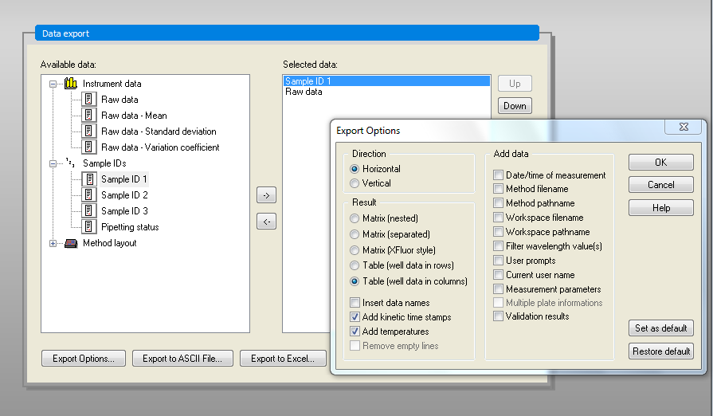
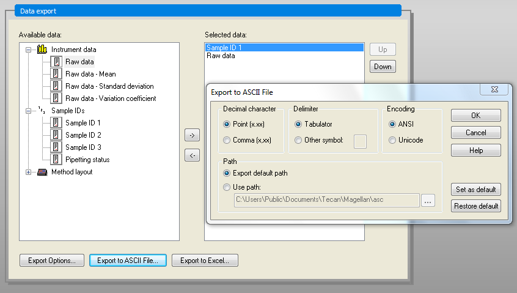
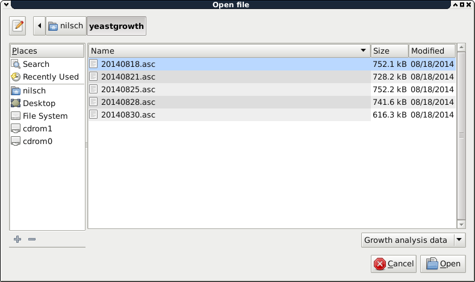
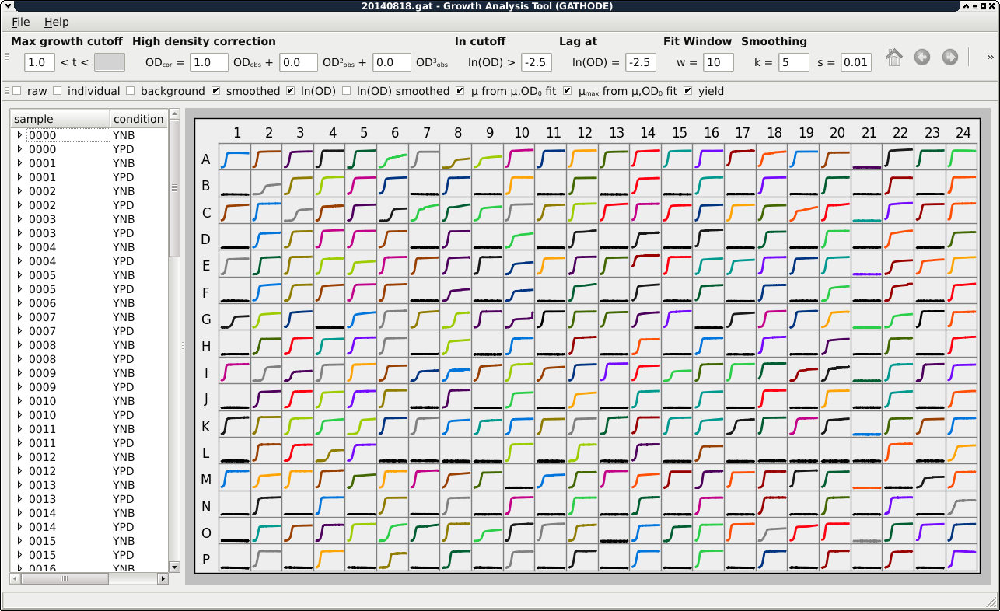
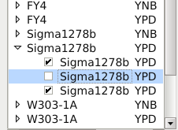

In this chapter we describe how to get started with the Growth Analysis Tool for High-throughput Optical Density Experiments (GATHODE).
First of all, when planning the experiment with your plate reader, you should label the individual wells according to the scheme sample_condition (note the underscore _), where replicates should contain exactly the same labels. This way GATHODE will later be able to automatically group replicates in order to extract the mean and variance of various properties (e.g. maximal growth rate). You should also label the empty wells, used to subtract the background optical density (OD) from the samples’ OD, according to the scheme background_condition.
Example: Assume you are growing the yeast strains FY4, W303-1A and Sigma1278b under two conditions, minimal (YNB) and rich (YPD) media, then the labelling could look like this
with each of this being present multiple times, corresponding to the number of replicates. If your platereader software does not support labelling of wells you can adjust these later using GATHODE.
After finishing your experiment with the plate reader, export the data.
Export the in ASCII format (Data Handling -> Data export -> Export to ASCII file...). Make sure to use the export options Direction: Horizontal, Result: Table (well data in columns), Add kinetic time stamps.
Use the Point as Decimal character and Tab as Delimiter in the second option window.
Export the data as plain text. sample and condition labels can be adjusted after importing the data into GATHODE.
(More detailed instructions will be added to this section once we get access to a Bioscreen C platereader.)
If you have access to a different platereader, we would be happy if you could provide us with the files that can be exported by the accompanying software. We will then be able to write an import function for GATHODE and adjust this documentation. For further information contact the developer.
Start GATHODE and open the file exported from the platereader (File ‣ Open). Note that it is not necessary to run GATHODE on the same computer as the plate reader software, any modern computer should be able to run GATHODE.
In case your platereader does not support assigning labels to the wells or you want to change the labels, you can do this by selecting File ‣ Save metadata. You will be prompted for a file name to save the currently existing metadata (i.e. sample and condition). You can then edit the metadata in a spreadsheet editor (e.g LibreOffice Calc or Microsoft Excel), where the spreadsheet layout mimics the layout of the plate. After saving your changes to the spreadsheet (make sure you save the data in the CSV-format), you can import the metadata by selecting File ‣ Load metadata.
Once the data is loaded, the replicates are grouped according to the scheme mentioned above, with the background OD for the corresponding condition automatically subtracted. You will see an overview figure of all optical density time series, and on the left of the main window you are able to choose the replicates of the different sample-condition pairs from a list.
The extraction of properties depends on certain parameters. In GATHODE, some parameters are defined for the whole plate (such as the high density correction coefficients or the fit-window size), whereas other parameters can have plate-wide defaults which can be overridden for each replicate or even each single well (examples are the cutoff values for the maximal growth rate). The plate-wide parameters can only be edited if no replicate or single well is selected. For more details on setting parameters have a look at the corresponding chapter in the documentation.
Once the parameters are adjusted, you can browse through the replicates by clicking on the entries in the list, and by clicking on the arrow next to a sample you can expand the list to see each individual well. In the expanded list you can deselect certain wells to mark them as outliers and exclude them from the calculations of replicate properties.
To save the data together with the parameters, select File ‣ Save As. Similarly, the data can be loaded (File ‣ Open), allowing for persistence and reproducibility of the analysis.
You may save the figures in PDF format (File ‣ Export figure), or you may save all the extracted properties such as maximal growth rate, yield and lag time as comma-separated values (File ‣ Export properties) suitable for further processing in other programs like R or your favourite Office-Suite.
{kind=link}
{kind=link}
{kind=link}
{kind=link}
{kind=link}